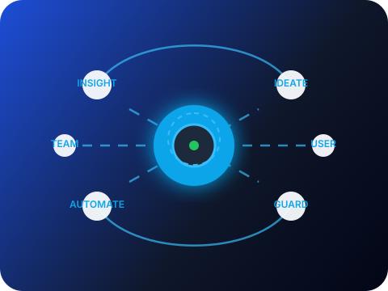

01
Sprint kickoff kit
- Agenda generator with timezone-aware reminders.
- Role cards clarifying facilitator, challenger, and note-taker.
- Embedded decision logs with emoji reactions.
Intelligence for regenerative teams

Clarity in every iteration
Understand how each release influences momentum with quick-to-scan views tuned for hybrid teams.
Automation built for humans
Swap confusing runbooks for icon-led checklists that teammates can complete in minutes.
Resilience without burnout
Quick iconography and color-coded alerts keep attention on what matters without overwhelming your crew.
Adaptive guardrails
Audit trails retain full contrast for low-light review and exports.
Compassionate alerts
Escalations respect focus hours while surfacing urgent blockers instantly.
Privacy-first
Granular roles and anonymized reports protect sensitive stories.
Pick a starter ritual and preview it live with your team in under ten minutes.